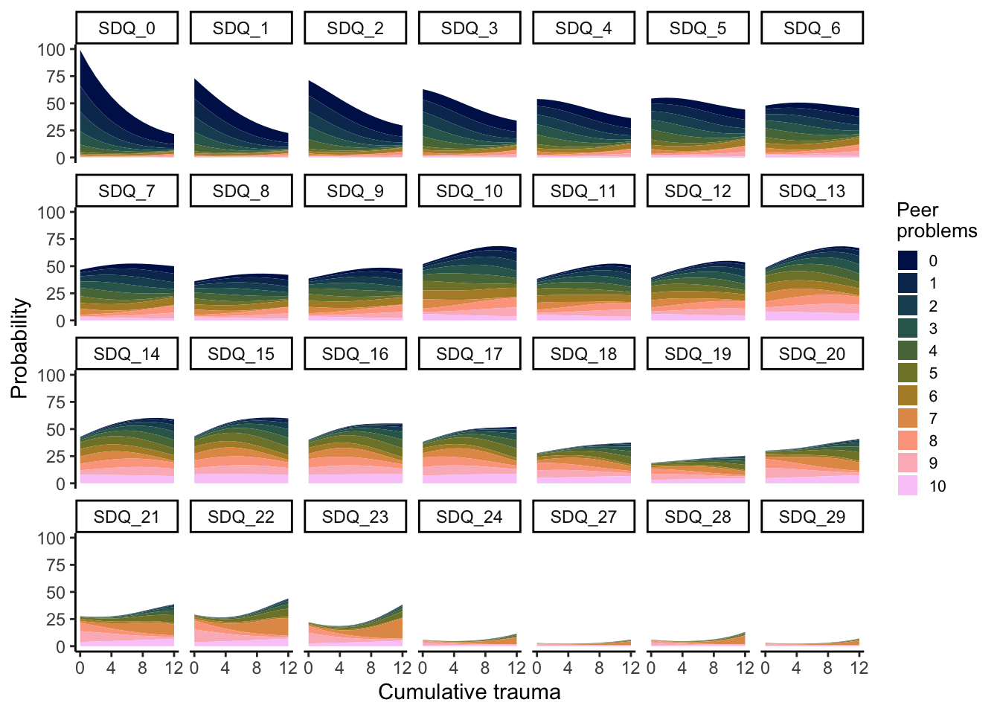

4 Analysis
4.1 Poisson regression
adolescents$SDQ_peer <- as.factor(adolescents$SDQ_peer)
interaction_model_poisson <- glm(SDQ_30 ~ cumulative_trauma*SDQ_peer, data=adolescents, family=poisson(link="log"))
poisson_summary <- summary.glm(interaction_model_poisson)
summ(interaction_model_poisson)## MODEL INFO:
## Observations: 4485
## Dependent Variable: SDQ_30
## Type: Generalized linear model
## Family: poisson
## Link function: log
##
## MODEL FIT:
## χ²(21) = 5277.86, p = 0.00
## Pseudo-R² (Cragg-Uhler) = 0.69
## Pseudo-R² (McFadden) = 0.16
## AIC = 26936.51, BIC = 27077.50
##
## Standard errors: MLE
## -----------------------------------------------------------------
## Est. S.E. z val. p
## ---------------------------------- ------- ------ -------- ------
## (Intercept) 0.86 0.02 50.86 0.00
## cumulative_trauma 0.08 0.01 11.66 0.00
## SDQ_peer1 0.27 0.03 10.27 0.00
## SDQ_peer2 0.51 0.03 18.33 0.00
## SDQ_peer3 0.75 0.03 22.06 0.00
## SDQ_peer4 1.05 0.04 29.23 0.00
## SDQ_peer5 1.48 0.05 32.54 0.00
## SDQ_peer6 1.61 0.06 28.46 0.00
## SDQ_peer7 1.56 0.09 18.25 0.00
## SDQ_peer8 1.93 0.16 11.95 0.00
## SDQ_peer9 2.09 0.15 13.63 0.00
## SDQ_peer10 1.79 0.18 9.92 0.00
## cumulative_trauma:SDQ_peer1 0.01 0.01 1.32 0.19
## cumulative_trauma:SDQ_peer2 0.01 0.01 1.31 0.19
## cumulative_trauma:SDQ_peer3 0.01 0.01 1.00 0.32
## cumulative_trauma:SDQ_peer4 -0.01 0.01 -1.26 0.21
## cumulative_trauma:SDQ_peer5 -0.04 0.01 -2.93 0.00
## cumulative_trauma:SDQ_peer6 -0.10 0.01 -6.66 0.00
## cumulative_trauma:SDQ_peer7 -0.02 0.02 -1.42 0.16
## cumulative_trauma:SDQ_peer8 -0.11 0.04 -3.02 0.00
## cumulative_trauma:SDQ_peer9 -0.12 0.05 -2.59 0.01
## cumulative_trauma:SDQ_peer10 -0.06 0.03 -2.06 0.04
## -----------------------------------------------------------------#checking on overdispersion
dispersion_poisson <- poisson_summary$deviance / poisson_summary$df.residual
if (dispersion_poisson > 2){
print("Overdispersion!")
} else {
print("You good on dispersion.")
}## [1] "Overdispersion!"4.2 Negative Binomial Model
interaction_model_negbi <- glm.nb(formula = SDQ_30 ~ cumulative_trauma * SDQ_peer, data = adolescents)
nb_summary <- summary(interaction_model_negbi)
nb_summary ##
## Call:
## glm.nb(formula = SDQ_30 ~ cumulative_trauma * SDQ_peer, data = adolescents,
## init.theta = 1.344141107, link = log)
##
## Deviance Residuals:
## Min 1Q Median 3Q Max
## -2.5429 -1.0238 -0.2453 0.3778 2.7769
##
## Coefficients:
## Estimate Std. Error z value Pr(>|z|)
## (Intercept) 0.856927 0.028484 30.085 < 2e-16 ***
## cumulative_trauma 0.085567 0.013667 6.261 3.83e-10 ***
## SDQ_peer1 0.261057 0.046717 5.588 2.30e-08 ***
## SDQ_peer2 0.500779 0.052890 9.468 < 2e-16 ***
## SDQ_peer3 0.747819 0.072048 10.379 < 2e-16 ***
## SDQ_peer4 1.052307 0.084689 12.426 < 2e-16 ***
## SDQ_peer5 1.485519 0.130774 11.359 < 2e-16 ***
## SDQ_peer6 1.618485 0.170543 9.490 < 2e-16 ***
## SDQ_peer7 1.569062 0.270354 5.804 6.49e-09 ***
## SDQ_peer8 1.952841 0.564844 3.457 0.000546 ***
## SDQ_peer9 2.088179 0.591936 3.528 0.000419 ***
## SDQ_peer10 1.790856 0.618733 2.894 0.003799 **
## cumulative_trauma:SDQ_peer1 0.017591 0.020673 0.851 0.394817
## cumulative_trauma:SDQ_peer2 0.014930 0.021108 0.707 0.479361
## cumulative_trauma:SDQ_peer3 0.008245 0.024876 0.331 0.740294
## cumulative_trauma:SDQ_peer4 -0.016170 0.027036 -0.598 0.549774
## cumulative_trauma:SDQ_peer5 -0.040503 0.035679 -1.135 0.256283
## cumulative_trauma:SDQ_peer6 -0.100564 0.040797 -2.465 0.013703 *
## cumulative_trauma:SDQ_peer7 -0.026008 0.053310 -0.488 0.625654
## cumulative_trauma:SDQ_peer8 -0.113766 0.118016 -0.964 0.335052
## cumulative_trauma:SDQ_peer9 -0.120232 0.173111 -0.695 0.487347
## cumulative_trauma:SDQ_peer10 -0.061492 0.099607 -0.617 0.537003
## ---
## Signif. codes: 0 '***' 0.001 '**' 0.01 '*' 0.05 '.' 0.1 ' ' 1
##
## (Dispersion parameter for Negative Binomial(1.3441) family taken to be 1)
##
## Null deviance: 6325.4 on 4484 degrees of freedom
## Residual deviance: 5185.5 on 4463 degrees of freedom
## AIC: 21821
##
## Number of Fisher Scoring iterations: 1
##
##
## Theta: 1.3441
## Std. Err.: 0.0439
##
## 2 x log-likelihood: -21775.4180#checking for overdispersion
dispersion_nb <- nb_summary$deviance / nb_summary$df.residual
if (dispersion_nb > 2){
print("overdispersion!")
} else {
print("You good on dispersion.")
}## [1] "You good on dispersion."#checking model fit
hist(rstandard(interaction_model_negbi), main = "Distribution of residuals", xlab="Residuals")#checking against reduced model
control_model_negbi <- glm.nb(SDQ_30 ~ cumulative_trauma+SDQ_peer, data=adolescents)
#checking difference between the two models
LL_interaction <- logLik(interaction_model_negbi)
LL_control <- logLik(control_model_negbi)
delta_2 <- 2*(LL_interaction-LL_control)
1-pchisq(delta_2, 10)## 'log Lik.' 0.2824302 (df=23)## Warning in anova.negbin(interaction_model_negbi, control_model_negbi, test = "LRT"): only Chi-squared LR tests are implemented## Likelihood ratio tests of Negative Binomial Models
##
## Response: SDQ_30
## Model theta Resid. df 2 x log-lik. Test df LR stat. Pr(Chi)
## 1 cumulative_trauma + SDQ_peer 1.336762 4473 -21787.46
## 2 cumulative_trauma * SDQ_peer 1.344141 4463 -21775.42 1 vs 2 10 12.03937 0.2824302#checking with each predictor
#cumulative trauma only
CT_model_negbi <- glm.nb(SDQ_30 ~ cumulative_trauma, data=adolescents)
#checking difference between the two models
LL_var <- logLik(CT_model_negbi)
LL_control <- logLik(control_model_negbi)
delta_2 <- 2*(LL_control-LL_var)
1-pchisq(delta_2, 10)## 'log Lik.' 0 (df=13)## Warning in anova.negbin(control_model_negbi, CT_model_negbi, test = "LRT"): only Chi-squared LR tests are implemented## Likelihood ratio tests of Negative Binomial Models
##
## Response: SDQ_30
## Model theta Resid. df 2 x log-lik. Test df LR stat. Pr(Chi)
## 1 cumulative_trauma 1.045221 4483 -22442.40
## 2 cumulative_trauma + SDQ_peer 1.336762 4473 -21787.46 1 vs 2 10 654.9378 0#peer problems only
PP_model_negbi <- glm.nb(SDQ_30 ~ SDQ_peer, data=adolescents)
#checking difference between the two models
LL_var <- logLik(PP_model_negbi)
LL_control <- logLik(control_model_negbi)
delta_2 <- 2*(LL_control-LL_var)
1-pchisq(delta_2, 1)## 'log Lik.' 0 (df=13)## Warning in anova.negbin(control_model_negbi, PP_model_negbi, test = "LRT"): only Chi-squared LR tests are implemented## Likelihood ratio tests of Negative Binomial Models
##
## Response: SDQ_30
## Model theta Resid. df 2 x log-lik. Test df LR stat. Pr(Chi)
## 1 SDQ_peer 1.264198 4474 -21931.11
## 2 cumulative_trauma + SDQ_peer 1.336762 4473 -21787.46 1 vs 2 1 143.6483 04.2.1 New reduced NB model
The effects of cumulative trauma, peer problems and their interaction on adolescents’ score on SDQ 30 was investigated using negative binomial regression based on parental responses (N=4,485) to National Health Interview Survey. While the maximal model did not significantly differ from the reduced model which did not include the interaction (χ2(10) = 12.039, p = 0.282); both predictors, cumulative trauma (χ2(1) = 143.645, p < 0.001) and peer problems (χ2(10) = 654.938, p < 0.001), were significant. Therefore, a model following the formula below was used:
log(SDQ30) = intercept + [peer problems] + m*cumulative trauma
While according to the model, an extra point in cumulative trauma score adds 1.089 to SDQ 30 score, increases in peer problems do not produce consistent increase in SDQ 30. A summary of the model can be seen in below.
##
## Call:
## glm.nb(formula = SDQ_30 ~ cumulative_trauma + SDQ_peer, data = adolescents,
## init.theta = 1.33676164, link = log)
##
## Deviance Residuals:
## Min 1Q Median 3Q Max
## -2.6038 -1.0401 -0.2651 0.4052 2.7706
##
## Coefficients:
## Estimate Std. Error z value Pr(>|z|)
## (Intercept) 0.857251 0.025797 33.231 < 2e-16 ***
## cumulative_trauma 0.085256 0.007147 11.928 < 2e-16 ***
## SDQ_peer1 0.284552 0.039605 7.185 6.74e-13 ***
## SDQ_peer2 0.525502 0.043959 11.954 < 2e-16 ***
## SDQ_peer3 0.764840 0.057464 13.310 < 2e-16 ***
## SDQ_peer4 1.017132 0.065887 15.438 < 2e-16 ***
## SDQ_peer5 1.386776 0.099072 13.998 < 2e-16 ***
## SDQ_peer6 1.340942 0.122499 10.947 < 2e-16 ***
## SDQ_peer7 1.469556 0.177306 8.288 < 2e-16 ***
## SDQ_peer8 1.533308 0.320782 4.780 1.75e-06 ***
## SDQ_peer9 1.776825 0.340303 5.221 1.78e-07 ***
## SDQ_peer10 1.503870 0.369893 4.066 4.79e-05 ***
## ---
## Signif. codes: 0 '***' 0.001 '**' 0.01 '*' 0.05 '.' 0.1 ' ' 1
##
## (Dispersion parameter for Negative Binomial(1.3368) family taken to be 1)
##
## Null deviance: 6304.8 on 4484 degrees of freedom
## Residual deviance: 5181.8 on 4473 degrees of freedom
## AIC: 21813
##
## Number of Fisher Scoring iterations: 1
##
##
## Theta: 1.3368
## Std. Err.: 0.0435
##
## 2 x log-likelihood: -21787.4570## Warning in anova.negbin(control_model_negbi): tests made without re-estimating 'theta'## Analysis of Deviance Table
##
## Model: Negative Binomial(1.3368), link: log
##
## Response: SDQ_30
##
## Terms added sequentially (first to last)
##
##
## Df Deviance Resid. Df Resid. Dev Pr(>Chi)
## NULL 4484 6304.8
## cumulative_trauma 1 398.83 4483 5906.0 < 2.2e-16 ***
## SDQ_peer 10 724.18 4473 5181.8 < 2.2e-16 ***
## ---
## Signif. codes: 0 '***' 0.001 '**' 0.01 '*' 0.05 '.' 0.1 ' ' 1## MODEL INFO:
## Observations: 4485
## Dependent Variable: SDQ_30
## Type: Generalized linear model
## Family: Negative Binomial(1.3368)
## Link function: log
##
## MODEL FIT:
## χ²() = , p =
## Pseudo-R² (Cragg-Uhler) = 0.20
## Pseudo-R² (McFadden) = 0.04
## AIC = 21813.46, BIC = 21896.77
##
## Standard errors: MLE
## -----------------------------------------------------
## Est. S.E. z val. p
## ----------------------- ------ ------ -------- ------
## (Intercept) 0.86 0.03 33.23 0.00
## cumulative_trauma 0.09 0.01 11.93 0.00
## SDQ_peer1 0.28 0.04 7.18 0.00
## SDQ_peer2 0.53 0.04 11.95 0.00
## SDQ_peer3 0.76 0.06 13.31 0.00
## SDQ_peer4 1.02 0.07 15.44 0.00
## SDQ_peer5 1.39 0.10 14.00 0.00
## SDQ_peer6 1.34 0.12 10.95 0.00
## SDQ_peer7 1.47 0.18 8.29 0.00
## SDQ_peer8 1.53 0.32 4.78 0.00
## SDQ_peer9 1.78 0.34 5.22 0.00
## SDQ_peer10 1.50 0.37 4.07 0.00
## -----------------------------------------------------## Warning: Tidiers for objects of class negbin are not maintained by the broom team, and are only supported through the glm tidier method. Please be cautious in interpreting and
## reporting broom output.| Model 1 | |
|---|---|
| (Intercept) | 0.86 *** |
| (0.03) | |
| cumulative_trauma | 0.09 *** |
| (0.01) | |
| SDQ_peer1 | 0.28 *** |
| (0.04) | |
| SDQ_peer2 | 0.53 *** |
| (0.04) | |
| SDQ_peer3 | 0.76 *** |
| (0.06) | |
| SDQ_peer4 | 1.02 *** |
| (0.07) | |
| SDQ_peer5 | 1.39 *** |
| (0.10) | |
| SDQ_peer6 | 1.34 *** |
| (0.12) | |
| SDQ_peer7 | 1.47 *** |
| (0.18) | |
| SDQ_peer8 | 1.53 *** |
| (0.32) | |
| SDQ_peer9 | 1.78 *** |
| (0.34) | |
| SDQ_peer10 | 1.50 *** |
| (0.37) | |
| N | 4485 |
| AIC | 21813.46 |
| BIC | 21896.77 |
| Pseudo R2 | 0.20 |
| *** p < 0.001; ** p < 0.01; * p < 0.05. | |
## model: SDQ_30 ~ cumulative_trauma + SDQ_peer
##
## cumulative_trauma effect
## cumulative_trauma
## 0 3 6 8 10
## 3.284668 4.241997 5.478343 6.496834 7.704676
##
## Lower 95 Percent Confidence Limits
## cumulative_trauma
## 0 3 6 8 10
## 3.168551 4.087494 5.104629 5.897549 6.807949
##
## Upper 95 Percent Confidence Limits
## cumulative_trauma
## 0 3 6 8 10
## 3.405040 4.402339 5.879416 7.157016 8.719517
##
## SDQ_peer effect
## SDQ_peer
## 0 1 2 3 4 5 6 7 8 9 10
## 2.644244 3.514639 4.472232 5.681555 7.312001 10.582076 10.108006 11.495331 12.252055 15.630282 11.896628
##
## Lower 95 Percent Confidence Limits
## SDQ_peer
## 0 1 2 3 4 5 6 7 8 9 10
## 2.518793 3.307984 4.165944 5.134478 6.490205 8.771582 7.993361 8.151591 6.546579 8.036194 5.772036
##
## Upper 95 Percent Confidence Limits
## SDQ_peer
## 0 1 2 3 4 5 6 7 8 9 10
## 2.775944 3.734205 4.801039 6.286923 8.237854 12.766265 12.782080 16.210656 22.929971 30.400672 24.5199054.2.2 Plotting of the model predictions
Predictions generated based on the model can be seen in below.
model_predict <- data.frame(ggpredict(control_model_negbi, terms = c("cumulative_trauma", "SDQ_peer")))
model_graph <- ggplot(model_predict, aes(x = x, y = predicted, colour = group, fill = group)) +
# plotting the prediction
geom_line(size = 0.75) +
# plotting the confidence levels
geom_ribbon(aes(ymin = conf.low, ymax = conf.high, xmin=0, xmax=12), alpha = .1, linetype=0) +
# setting up color and fill palette - scico tokyo
scale_color_scico_d(palette = 'batlow', begin=0, end=1) +
scale_fill_scico_d(palette = 'batlow', begin=0, end=1) +
# changing limits, breaks and labels of both axis
scale_x_continuous(breaks = c(0,2,4,6,8,10,12), limits = c(0, 12)) +
scale_y_continuous(breaks = c(0,10,20,30, 40, 50, 60, 70)) +
# background setting
theme_classic() +
# changing labels and title
labs(x="Cumulative trauma", title="Negative Binomial Model Predictions",
color="Peer \nproblems", fill="Peer \nproblems") +
theme(axis.text = element_text(size=11), axis.title = element_text(size=12),
axis.title.y = element_blank(),
legend.title = element_text( size=10), legend.text=element_text(size=10), legend.key.size = unit(0.5, 'cm'),
plot.title = element_text(size=12, face="bold")) +
geom_hline(yintercept=30, size=0.5, linetype=2, alpha=0.5)
model_graphggsave("model_graph.png", plot=model_graph, units = "cm", width = 15, height = 11, dpi = "retina",
device = "png", path = here())data_prediction <- distribution + model_graph &
theme(plot.tag = element_text(size = 8), plot.title = element_text(size=12, face="italic")) &
plot_annotation(tag_levels = 'A',
title="The effects of cumulative trauma and peer problems on SDQ 30 score",
theme = theme(plot.title = element_text(size = 12, face="bold")))
ggsave("data_prediction.png", plot=data_prediction, units = "cm", width = 15, height = 8.5, dpi = "retina",
device = "png", path = here())
data_predictionModel Fit However, the negative binomial model did not provide a perfect fit and produced uneven distribution of produced residuals.


4.3 Hurdle
interaction_model_hurdle <- hurdle(formula = SDQ_30 ~ cumulative_trauma * SDQ_peer, data = adolescents, dist ="geometric")
hurdle_summary <- summary(interaction_model_hurdle)
hurdle_summary ##
## Call:
## hurdle(formula = SDQ_30 ~ cumulative_trauma * SDQ_peer, data = adolescents, dist = "geometric")
##
## Pearson residuals:
## Min 1Q Median 3Q Max
## -1.0348 -0.6768 -0.1980 0.3980 4.7273
##
## Count model coefficients (truncated geometric with log link):
## Estimate Std. Error z value Pr(>|z|)
## (Intercept) 0.918105 0.037995 24.164 < 2e-16 ***
## cumulative_trauma 0.067707 0.017545 3.859 0.000114 ***
## SDQ_peer1 0.159597 0.060752 2.627 0.008613 **
## SDQ_peer2 0.429727 0.067674 6.350 2.15e-10 ***
## SDQ_peer3 0.622528 0.088234 7.055 1.72e-12 ***
## SDQ_peer4 0.946328 0.102346 9.246 < 2e-16 ***
## SDQ_peer5 1.325038 0.150027 8.832 < 2e-16 ***
## SDQ_peer6 1.491574 0.201927 7.387 1.51e-13 ***
## SDQ_peer7 1.416996 0.310067 4.570 4.88e-06 ***
## SDQ_peer8 1.832499 0.698126 2.625 0.008668 **
## SDQ_peer9 1.972574 0.666234 2.961 0.003069 **
## SDQ_peer10 1.656514 0.709928 2.333 0.019630 *
## cumulative_trauma:SDQ_peer1 0.030684 0.026414 1.162 0.245382
## cumulative_trauma:SDQ_peer2 0.017687 0.026373 0.671 0.502462
## cumulative_trauma:SDQ_peer3 0.022493 0.030034 0.749 0.453909
## cumulative_trauma:SDQ_peer4 -0.004587 0.032400 -0.142 0.887405
## cumulative_trauma:SDQ_peer5 -0.014472 0.041219 -0.351 0.725520
## cumulative_trauma:SDQ_peer6 -0.085251 0.049272 -1.730 0.083595 .
## cumulative_trauma:SDQ_peer7 -0.003872 0.061457 -0.063 0.949760
## cumulative_trauma:SDQ_peer8 -0.098607 0.150179 -0.657 0.511440
## cumulative_trauma:SDQ_peer9 -0.104305 0.192693 -0.541 0.588299
## cumulative_trauma:SDQ_peer10 -0.042025 0.114432 -0.367 0.713431
## Zero hurdle model coefficients (binomial with logit link):
## Estimate Std. Error z value Pr(>|z|)
## (Intercept) 0.71197 0.05713 12.461 < 2e-16 ***
## cumulative_trauma 0.13694 0.03374 4.058 4.95e-05 ***
## SDQ_peer1 0.52452 0.10554 4.970 6.69e-07 ***
## SDQ_peer2 0.64379 0.13030 4.941 7.77e-07 ***
## SDQ_peer3 1.21153 0.22942 5.281 1.29e-07 ***
## SDQ_peer4 1.47773 0.30964 4.772 1.82e-06 ***
## SDQ_peer5 4.98031 1.92053 2.593 0.00951 **
## SDQ_peer6 3.20098 1.37222 2.333 0.01966 *
## SDQ_peer7 14.85410 709.82840 0.021 0.98330
## SDQ_peer8 14.85410 1504.04801 0.010 0.99212
## SDQ_peer9 14.85410 1588.82123 0.009 0.99254
## SDQ_peer10 14.85410 1645.40372 0.009 0.99280
## cumulative_trauma:SDQ_peer1 0.02236 0.05990 0.373 0.70895
## cumulative_trauma:SDQ_peer2 0.13254 0.07636 1.736 0.08259 .
## cumulative_trauma:SDQ_peer3 0.11767 0.12010 0.980 0.32719
## cumulative_trauma:SDQ_peer4 0.16288 0.16225 1.004 0.31544
## cumulative_trauma:SDQ_peer5 -0.42831 0.28401 -1.508 0.13153
## cumulative_trauma:SDQ_peer6 -0.08581 0.34979 -0.245 0.80621
## cumulative_trauma:SDQ_peer7 -0.13694 137.33738 -0.001 0.99920
## cumulative_trauma:SDQ_peer8 -0.13694 311.26397 0.000 0.99965
## cumulative_trauma:SDQ_peer9 -0.13694 462.83439 0.000 0.99976
## cumulative_trauma:SDQ_peer10 -0.13694 263.52271 -0.001 0.99959
## ---
## Signif. codes: 0 '***' 0.001 '**' 0.01 '*' 0.05 '.' 0.1 ' ' 1
##
## Number of iterations in BFGS optimization: 27
## Log-likelihood: -1.089e+04 on 44 Dfcontrol_model_hurdle <- hurdle(formula = SDQ_30 ~ cumulative_trauma + SDQ_peer, data = adolescents, dist ="geometric")
LL_int <- logLik(interaction_model_hurdle)
LL_control <- logLik(control_model_hurdle)
delta_2 <- 2*(LL_int-LL_control)
1-pchisq(delta_2, 1)## 'log Lik.' 0.0001223055 (df=44)## df AIC
## control_model_negbi 13 21813.46
## control_model_hurdle 24 21849.13Hurdle model looks like a pretty good fit but residuals not really symmetrically distributed - still rightward skewed When tested against final NegBi model, it has higher AIC.
4.4 CLM
Cumulative Logit Model
To further explore the data, a cumulative logit model was built using the clm function from ordinal R package (Christensen, 2019). The cumulative link model predicted probabilities that a given adolescent acquires a certain score in SDQ 30. In this case, the model including an interaction between cumulative trauma and peer problems was significantly different from a reduced model (χ2(10) = 26.302, p = 0.003). Therefore, model following the formula below was used:
logit(P(Y_i ≤ j)) = intercept - ([peer problems_i] + [m+interaction]cumulative trauma_i) i = 1,…,n, j = 1,…J -1*
A summary of the model can be found in below. Compared to the previous model using negative binomial regression, this model produced more symmetrical distribution of residuals. Furthermore, the cumulative logit model produced a smaller Akaike information criterion compared to the negative binomial model (Cumulative Logit Model: AIC = 21,595; Negative Binomial Model: AIC=21,813).
adolescents$SDQ_30 <- as.ordered(adolescents$SDQ_30)
clm_model <- clm(SDQ_30 ~ cumulative_trauma*SDQ_peer, data=adolescents)
summary(clm_model)## formula: SDQ_30 ~ cumulative_trauma * SDQ_peer
## data: adolescents
##
## link threshold nobs logLik AIC niter max.grad cond.H
## logit flexible 4485 -10749.34 21594.67 6(0) 2.58e-07 1.4e+04
##
## Coefficients:
## Estimate Std. Error z value Pr(>|z|)
## cumulative_trauma 0.13067 0.02380 5.489 4.03e-08 ***
## SDQ_peer1 0.43268 0.07817 5.535 3.11e-08 ***
## SDQ_peer2 0.79009 0.09234 8.556 < 2e-16 ***
## SDQ_peer3 1.24999 0.12959 9.646 < 2e-16 ***
## SDQ_peer4 1.90008 0.16215 11.718 < 2e-16 ***
## SDQ_peer5 3.37032 0.26875 12.541 < 2e-16 ***
## SDQ_peer6 3.73450 0.32229 11.588 < 2e-16 ***
## SDQ_peer7 3.53776 0.51997 6.804 1.02e-11 ***
## SDQ_peer8 5.45650 1.04254 5.234 1.66e-07 ***
## SDQ_peer9 6.07487 0.97562 6.227 4.77e-10 ***
## SDQ_peer10 4.46953 1.08764 4.109 3.97e-05 ***
## cumulative_trauma:SDQ_peer1 0.04599 0.03670 1.253 0.2102
## cumulative_trauma:SDQ_peer2 0.08873 0.03803 2.333 0.0197 *
## cumulative_trauma:SDQ_peer3 0.11842 0.04579 2.586 0.0097 **
## cumulative_trauma:SDQ_peer4 0.09577 0.05106 1.876 0.0607 .
## cumulative_trauma:SDQ_peer5 0.03778 0.07192 0.525 0.5994
## cumulative_trauma:SDQ_peer6 -0.18731 0.07726 -2.424 0.0153 *
## cumulative_trauma:SDQ_peer7 0.17528 0.10183 1.721 0.0852 .
## cumulative_trauma:SDQ_peer8 -0.31553 0.20714 -1.523 0.1277
## cumulative_trauma:SDQ_peer9 -0.33545 0.28799 -1.165 0.2441
## cumulative_trauma:SDQ_peer10 -0.06658 0.20391 -0.327 0.7440
## ---
## Signif. codes: 0 '***' 0.001 '**' 0.01 '*' 0.05 '.' 0.1 ' ' 1
##
## Threshold coefficients:
## Estimate Std. Error z value
## 0|1 -0.71521 0.05106 -14.006
## 1|2 0.05663 0.04920 1.151
## 2|3 0.64337 0.05010 12.842
## 3|4 1.10874 0.05194 21.348
## 4|5 1.49100 0.05408 27.571
## 5|6 1.86979 0.05677 32.937
## 6|7 2.20111 0.05964 36.906
## 7|8 2.52194 0.06289 40.101
## 8|9 2.76862 0.06577 42.098
## 9|10 3.03101 0.06927 43.756
## 10|11 3.38221 0.07470 45.276
## 11|12 3.64210 0.07930 45.925
## 12|13 3.91292 0.08466 46.220
## 13|14 4.25454 0.09231 46.087
## 14|15 4.56816 0.10048 45.462
## 15|16 4.90433 0.11073 44.289
## 16|17 5.23952 0.12272 42.694
## 17|18 5.59097 0.13725 40.735
## 18|19 5.87450 0.15086 38.939
## 19|20 6.08469 0.16228 37.495
## 20|21 6.46849 0.18621 34.739
## 21|22 6.90550 0.21975 31.425
## 22|23 7.55545 0.28689 26.336
## 23|24 8.43573 0.42309 19.939
## 24|27 8.85347 0.51265 17.270
## 27|28 9.14591 0.58839 15.544
## 28|29 10.25391 1.00649 10.188## Type I Analysis of Deviance Table with Wald chi-square tests
##
## Df Chisq Pr(>Chisq)
## cumulative_trauma 1 435.123 < 2.2e-16 ***
## SDQ_peer 10 797.826 < 2.2e-16 ***
## cumulative_trauma:SDQ_peer 10 27.049 0.002559 **
## ---
## Signif. codes: 0 '***' 0.001 '**' 0.01 '*' 0.05 '.' 0.1 ' ' 1## Tests of scale effects
##
## formula: SDQ_30 ~ cumulative_trauma * SDQ_peer
## Df logLik AIC LRT Pr(>Chi)
## <none> -10749 21595
## cumulative_trauma 1 -10745 21588 8.239 0.0041004 **
## SDQ_peer 10 -10733 21582 33.006 0.0002718 ***
## cumulative_trauma:SDQ_peer 11 -10738 21594 22.352 0.0217861 *
## ---
## Signif. codes: 0 '***' 0.001 '**' 0.01 '*' 0.05 '.' 0.1 ' ' 1#checking against reduced model
clm_model_control <- clm(SDQ_30 ~ cumulative_trauma+SDQ_peer, data=adolescents)
LL_interaction <- logLik(clm_model)
LL_control <- logLik(clm_model_control)
delta_2 <- 2*(LL_interaction-LL_control)
1-pchisq(delta_2, 10)## 'log Lik.' 0.00335421 (df=48)## 'test' argument ignored in anova.clm## Likelihood ratio tests of cumulative link models:
##
## formula: link: threshold:
## clm_model_control SDQ_30 ~ cumulative_trauma + SDQ_peer logit flexible
## clm_model SDQ_30 ~ cumulative_trauma * SDQ_peer logit flexible
##
## no.par AIC logLik LR.stat df Pr(>Chisq)
## clm_model_control 38 21601 -10762
## clm_model 48 21595 -10749 26.302 10 0.003354 **
## ---
## Signif. codes: 0 '***' 0.001 '**' 0.01 '*' 0.05 '.' 0.1 ' ' 1autoplot.clm(clm_model, what = "qq") +
theme_bw() +
labs(title = "Normal Q-Q") +
theme(plot.title = element_text(hjust = 0.5, face = "bold"))
4.4.1 Plotting of the final model
Predicted probabilities of a given SDQ30 score based the fitted cumulative logit model. Formula: SDQ30 ~ cumulative trauma * peer problems. Values are stacked on each other and thus do not respond to the value on the y-axis.
new_data <- data.frame("cumulative_trauma"=c(0:12), "SDQ_peer"=as.factor(0))
predicted <- data.frame(predict(clm_model,new_data,type = "p")) %>% mutate(cumulative_trauma=c(0:12), SDQ_peer=as.factor(0))
for (i in 1:10) {
new_data <- data.frame("cumulative_trauma"=c(0:12), "SDQ_peer"=as.factor(i))
predicted_new <- data.frame(predict(clm_model,new_data,type = "p")) %>% mutate(cumulative_trauma=c(0:12), SDQ_peer=as.factor(i))
predicted <- full_join(predicted, predicted_new)
}
predicted <- predicted %>%
relocate(cumulative_trauma, SDQ_peer) %>%
rename_with(~ gsub("fit.", "SDQ_", .x, fixed = TRUE)) %>%
pivot_longer(cols = SDQ_0:SDQ_29, names_to = "SDQ_30", values_to = "probability") %>%
mutate(probability = probability*100)
predicted$SDQ_30 <- factor(predicted$SDQ_30,
levels = c("SDQ_0", "SDQ_1", "SDQ_2", "SDQ_3", "SDQ_4", "SDQ_5", "SDQ_6", "SDQ_7", "SDQ_8", "SDQ_9",
"SDQ_10", "SDQ_11", "SDQ_12", "SDQ_13", "SDQ_14", "SDQ_15", "SDQ_16", "SDQ_17", "SDQ_18", "SDQ_19",
"SDQ_20", "SDQ_21", "SDQ_22", "SDQ_23", "SDQ_24", "SDQ_25", "SDQ_26", "SDQ_27", "SDQ_28", "SDQ_29"))
probabilities <- ggplot(predicted, aes(x=cumulative_trauma, y=probability, fill=SDQ_peer)) +
geom_area() +
theme_classic() +
scale_x_continuous(breaks = c(0,4,8,12)) +
scale_fill_scico_d(palette = 'batlow', begin=0, end=1) +
facet_wrap(.~ordered(SDQ_30), ncol = 7) +
labs(x = "Cumulative trauma", y="Probability", fill="Peer \nproblems") +
theme(legend.title = element_text(size=10), legend.text=element_text(size=8), legend.key.size = unit(0.4, 'cm'))
ggsave("probabilities.png", plot=probabilities, units = "cm", width = 25, height = 15.5, dpi = "retina",
device = "png", path = here())
probabilities
not_filled <- ggplot(predicted, aes(x=cumulative_trauma, y=probability, color=SDQ_peer, fill=SDQ_peer)) +
geom_line() +
theme_classic() +
scale_x_continuous(breaks = c(0,4,8,12)) +
scale_color_scico_d(palette = 'batlow', begin=0, end=1) +
scale_fill_scico_d(palette = 'batlow', begin=0, end=1) +
facet_wrap(.~ordered(SDQ_30)) +
labs(x = "Cumulative trauma", y="Probability")#alternative plotting
plot_model(clm_model, type="int", colors = scico(11, palette = "batlow")) +
scale_x_continuous(breaks=c(0,4,8,12)) +
theme(axis.text = element_text(size = 8), axis.title.y = element_blank()) +
labs(legend = "Peer \nproblems", x="Cumulative Trauma (0-12)", title = "Predicted probabilities of SDQ 30")
plot_model(clm_model, terms="cumulative_trauma", type="eff") +
scale_x_continuous(breaks = c(0,2,4,6,8,10,12)) +
labs(x="Cumulative Trauma (0-12)") +
theme(axis.title.y = element_blank())